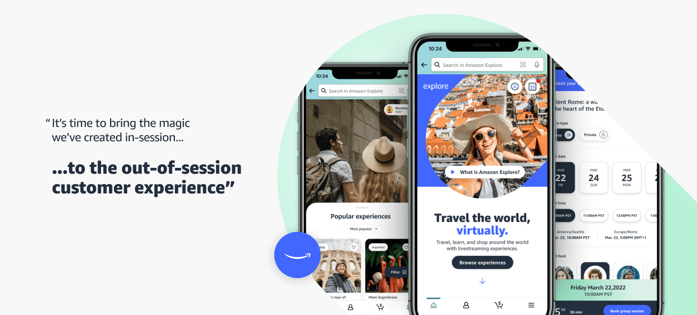
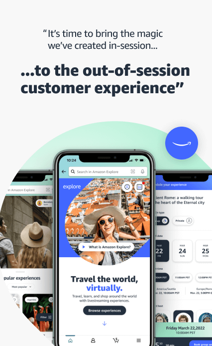
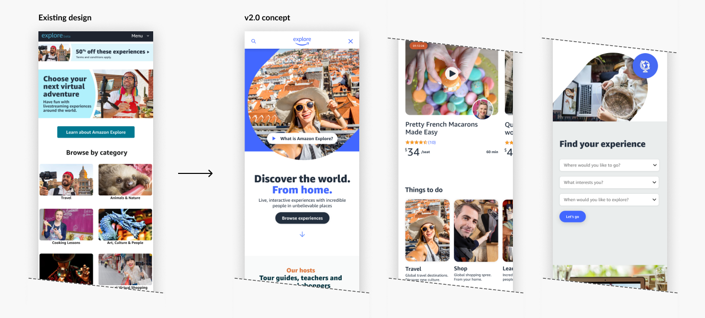
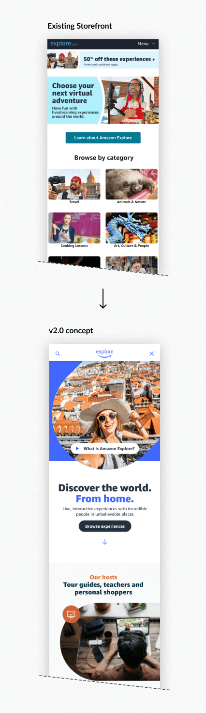
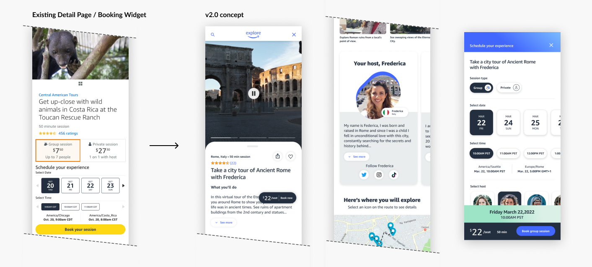
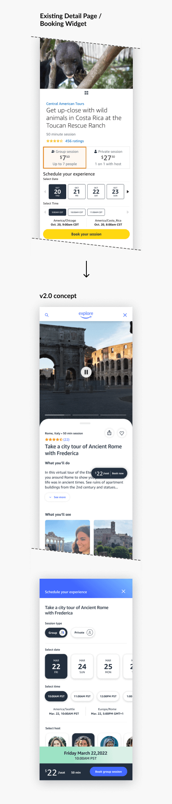
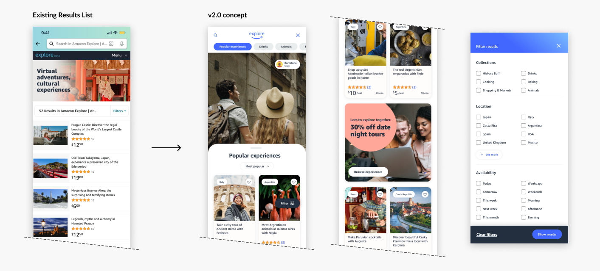
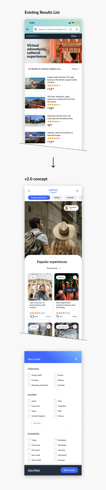

Amazon Explore v2.0
Sr. UX Designer - 11/2021 - 4/2022
Project Overview
Amazon Explore is a real-time live-streaming service, offering personal shopping, live lessons, and virtual tourism with real hosts on location in places around the world.
Project Goal
I was tasked with re-imagining what the Explore storefront could look like, and how we could adjust our Informational Architecture to lean more into customer education and inspiration. Our goals were to inform new customers about the service, and to make it easier for our customers to discover new experiences by smart categorization, filtering, and an intuitive booking CX.
Interactive Figma prototype
Launch


Storefront
The Explore Storefront is built as an internal page within Amazon's retail website/mobile app (mWeb and mShop). There are some fairly strict limitations when building within this system. I set out to challenge these limitations and create a vision for what the product could be when existing beyond the bounds of Amazon's retail framework. My plan was to level set this vision, and then work backwards with the goal of taking what we could and integrating it into the existing retail storefront.


Detail Pages
Our Detail Pages are the most crucial pieces of Explore. These pages provide information, photos, maps and/or ingredients lists for our live lesson experiences. They also contain our booking widget, which allows our customers to book a time slot for their session.
Through our research I identified some significant pain points with our customers, such as the need to vertically scroll back up to the top of the page in order to enter the booking flow, a lack of inspirational imagery, and limited mobile swipe gesture functionality on our shovelers and image galleries. I sought to reimagine the CX of these to provide our customers with a more intuitive and engaging experience.
Through our research I identified some significant pain points with our customers, such as the need to vertically scroll back up to the top of the page in order to enter the booking flow, a lack of inspirational imagery, and limited mobile swipe gesture functionality on our shovelers and image galleries. I sought to reimagine the CX of these to provide our customers with a more intuitive and engaging experience.


List views
Explore's List view pages are powered by the Amazon Search team templates and tech framework, and they provide little control for customization. Our List Views were very basic, and didn't offer much in the way of discoverability.
I created a list view layout that's more in-line with modern mobile views of this type. I also made sure to allow the grid to be broken up for seasonal promotion pieces to drive bookings, and I tackled our issue of filtering. The existing CX for filtering was disjointed and introducing CX pain points. The customer could get handed off to a filter flow powered by the Search team's codebase, or to a hand built flow that was built internally in Explore in the product's early days. This needed to be rethought and streamlined into one CX.
I added a floating filter button on these views much like we did with the booking flow on our detail pages. The result was that our customers would be able to open and close the filter menu at will, and not be confused by two disparate UI's depending on where they were in the Storefront.
I created a list view layout that's more in-line with modern mobile views of this type. I also made sure to allow the grid to be broken up for seasonal promotion pieces to drive bookings, and I tackled our issue of filtering. The existing CX for filtering was disjointed and introducing CX pain points. The customer could get handed off to a filter flow powered by the Search team's codebase, or to a hand built flow that was built internally in Explore in the product's early days. This needed to be rethought and streamlined into one CX.
I added a floating filter button on these views much like we did with the booking flow on our detail pages. The result was that our customers would be able to open and close the filter menu at will, and not be confused by two disparate UI's depending on where they were in the Storefront.


Interactive Figma prototype
Launch